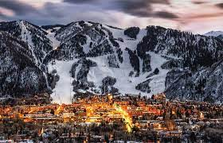

Aspen, Colorado
Las vistas de las altas cumbres, las nieves perpetuas y la naturaleza son características que definen a la perfección a Aspen, una ciudad que te espera para que vivas una experiencia única.
Situada en pleno corazón de las montañas Colorado, Aspen se ha convertido en una referencia para el turismo de lujo que busca un servicio exclusivo en todos los sentidos. La sencilla arquitectura de su centro con edificios de ladrillo rojo y algunos eventos como el Music Festival Aspen de verano son motivos por los que viajar hasta aquí.
Pero hay mucho más al margen de todo lo anterior. Las pistas de esquí cercana, los atardeceres en las altas cumbres o la gastronomía de restaurantes como el Cache Cache son momentos que tienes que vivir si quieres empaparte bien del encanto de Aspen
¿Por qué visitar Aspen, qué tiene de interesante?
- Disfruta de una buena comida en Element 47
- Vagar por un pueblo fantasma de la vida real
- Pasa una acogedora tarde en una cabaña de madera
- Maroon Bells
- Sumérjase en aguas termales en Glenwood Springs
- John Denver Sanctuary
- Esquiar
- Silver Queen Gondola
- Aspen Brewing Company
- Conducir por Independence Pass

Soy una personas que jamás ha conocido la nieve, por lo cual cualuqier aventura o cosa nueva por hacer
me emociana demasiado, me encantaria conocer la nieve y que mejor que ser en un lugar bonito, con actividades
y un gran paisaje.